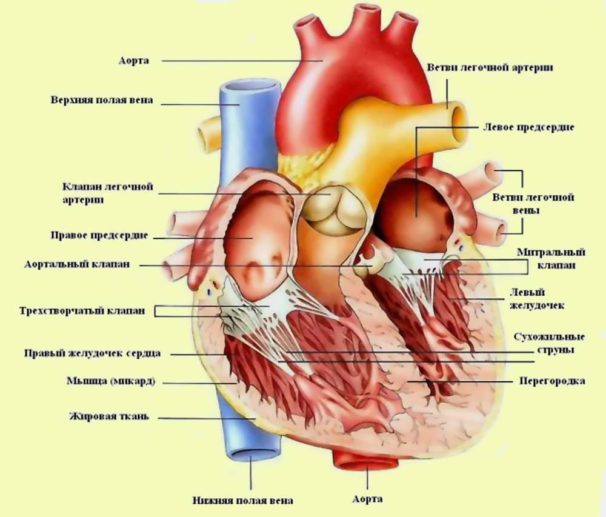
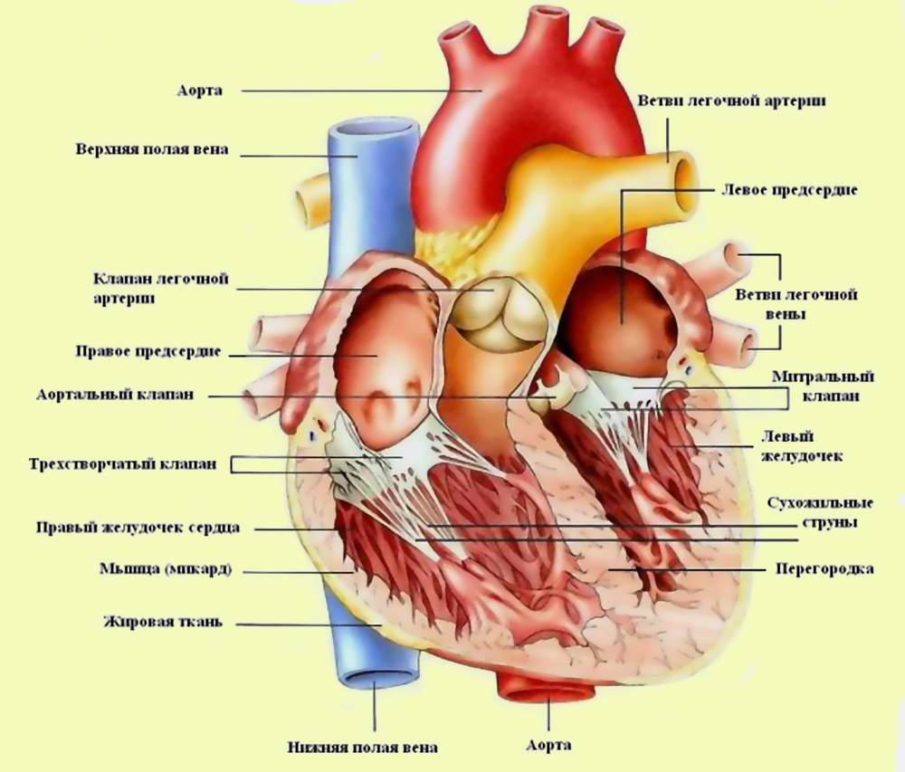
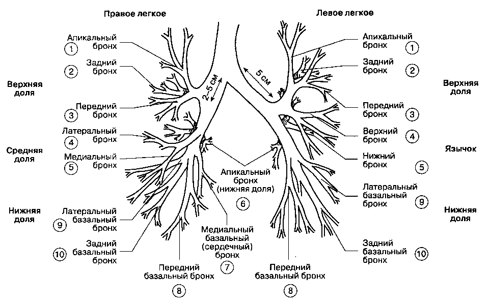
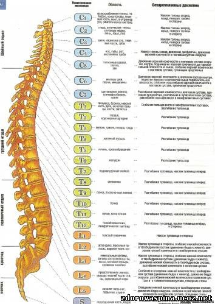

Сердце
Сердце человека — это конусообразный полый мышечный орган, в который поступает кровь из впадающих в него венозных стволов и перекачивающий её в артерии, которые примыкают к сердцу.Подробнее...
Сердце человека — это конусообразный полый мышечный орган, в который поступает кровь из впадающих в него венозных стволов и перекачивающий её в артерии, которые примыкают к сердцу.Подробнее...
Бронхи (от др.-греч.«дыхательное горло, трахея» лат. bronchia) — ветви дыхательного горла у высших позвоночных (амниот) (в том числе человека).Подробнее...
Позвоночный столб или Позвоночник (columna vertebralis) — основная часть осевого скелета человека. Состоит из 33–34 позвонков, соединённых между собой хрящами, суставами и связками.
Позвоночный столб выполняет функцию опоры, защиты спинного мозга и участвует в движениях туловища и головы. Подробнее...